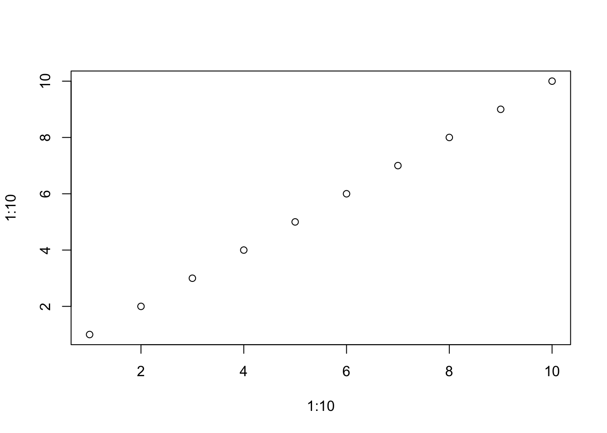

MySQL 学习笔记
第 1 章 基础
不区分大小写：对 SQL 关键字使用大写，而对列名和表名使用小写，但是表名、列名和值可能有所不同
所有空格都被忽略
| Database |
|---|
| information_schema |
| LEARN |
| mysql |
| performance_schema |
| sys |
| Tables_in_learn |
|---|
| Customers |
| OrderItems |
| Orders |
| Products |
| Vendors |

Figure 1.1: aa
1.1 参考
1.1.2 asdfadsf
adfadfasd
1.1.2.2 bbb
bbb
作者：图灵教育
链接：https://leetcode.cn/leetbook/read/sam-teach-yourself-sql-in-5-minutes-fifth-edition/p6bccd/
来源：力扣（LeetCode）